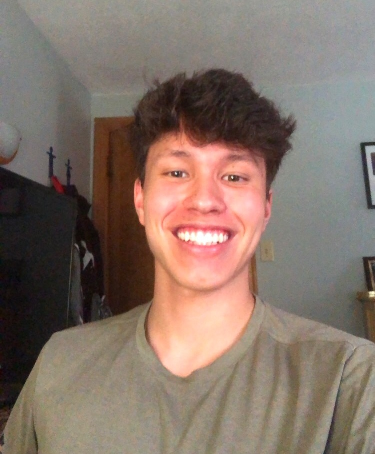

Entering our first year of service, the Boston Banquets Hall by Elevents is committed to making your dream event come true. We’re a locally owned and operated banquet facility that caters to weddings, business events, performances and a variety of additional special occasions. We strive to create extraordinary and memorable events for our clients. We welcome you to contact us anytime to set up a private showing of our venue.
| Eric Toh | Panru Jing | Aidan Beckett | Jessica Nordlund |
|  | |||
| Hi, I am Eric Toh, a Junior studying Computer Science at Tufts University. Outside of class, I am the planning and marketing executive at Boston Banquets. Being a Boston Local it has been a dream of mine to contribute to Boston's amazing growth and culture. I hope that events organized and hosted by Boston Banquets will be able to contribute to this amazing city and continue to move it forward. | Hi! My name is Pan and I'm a senior at Tufts studying Engineering Psychology. In this screen-addicted age, I want to encourage more people to come out and experience all the amazing offline activities Boston Banquets can offer. Our amazing team is working every day to provide our clients with unforgettable and awesome memories while still taking care of everyone's safety. | My name is Aidan Beckett and I am a sophmore at Tufts University studying Mechanical and Human Factors Engineering. I love playing and listening to music, which is why I took the job as the chief sound engineer at Boston Banquets. Good sound quality is paramount for any special occasion, which is why I take pride in making your experience as enjoyable as possible. | Hi, there! My name is Jessica, and I moved to Boston 3 years ago to study Computer Engineering at Tufts. My main goal in life, though, is to help people, and at Boston Banquets, I can do just that! Whether you need a venue for your dream wedding, or just an office space to spruce up a Monday morning meeting, our team is dedicated to helping make your life easier! |